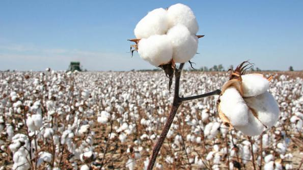

Cotton Production
General Info :
Cotton is one of the most important fibre and cash crop of India as well as of entire world. It plays a dominant role in the industrial and agricultural economy of the country. It provides the basic raw material to cotton textile industry. In India it provides direct livelihood to 6 million farmers and about 40-50 million people are employed in cotton trade and its processing. Cotton is a water thirsty crop and around 6% of the water for irrigation in is used for its cultivation. In India, it is grown on a large scale in Maharashtra, Gujarat, Karnataka, Madhya Pradesh, Punjab, Rajasthan, Haryana, Tamil Nadu and Uttar Pradesh. Gujarat is the largest producer of cotton followed by Maharashtra and Punjab. It is vital kharif crop of Punjab. The average lint yield of the State is around 697 kg per hectare.
SOIL :
It can be grown on all type of soil having pH ranges in-between 6 and 8. Deep, friable, well drained and fertile soil are good for crop cultivation. Sandy, saline or water logged soils are not suitable for cotton cultivation. The depth of soil should not be less than 20-25 cm.
POPULAR VARIETIES WITH THEIR YIELD :
American varieties of cotton : RCH 650 BG II: High yielding Bt cotton hybrid, gives resistance against American, pink and spotted bollworm, also against tobacco caterpillars. Its ball are big and have average weight of 4.5 gm. Its fibre length is 25.5 mm and ginning percent is 34%. It gives average yield of seed cotton about 9.5 qtl/acre. NCS 855 BG II: High yielding Bt cotton hybrid, gives resistance against American, pink and spotted bollworm, also against tobacco caterpillars. It is tolerant to para wilt. Its fibre length is about 28.5 mm and ginning outturn of 36%. It gives average yield of seed cotton about 9.7 qtl/acre. ANKUR 3028 BG II: High yielding Bt cotton hybrid, gives resistance against American, pink and spotted bollworm, also against tobacco caterpillars. It is moderately tolerant to leaf curl virus and para wilt. Its fibre length is about 31.3 mm and ginning outturn of 31.4%. It give average yield of 9.7 qtl/acre. MRC 7017 BG II : High yielding, early maturing variety having resistance to tobacco caterpillars, American, pink and spotted bollworm. Also give resistance to leaf curl virus and para wilt. Its fibre quality is good having fibre length of 29.7 mm and ginning outturn of 33.6%. It give average yield of 10.4 qtl/acre. MRC 7031 BG II : High yielding, early maturing variety having resistance to tobacco caterpillars, American, pink and spotted bollworm. Also give resistance to leaf curl virus and tolerant to para wilt. Its fibre length is 29.4 mm and ginning outturns is 33.4%. It give average yield of 9.8 qtl/acre. Other state varieties: Ankur 226BG, PCH 406 BT, Sigma Bt, SDS 1368 Bt, SDS 9Bt, NAMCOT 402 Bt, GK 206 Bt, 6317 Bt, 6488 Bt, MRC 7017 BG II, MRC 7031 BG II, NCS 145 BG II , ACH 33-2 BG II, JKCH 1050 Bt, MRC 6025 Bt, MRC 6029 Bt, NCS 913 Bt, NCS 138 Bt, RCH 308 Bt, RCH 314 Bt
LAND PREPARATION :
It required thorough land preparation for good germination and growth of crop. After removal of Rabi crop, irrigate field immediately then take ploughing of land with MB plough and planking. Carry out deep ploughing once in three years, it will help to keep check on perennial weeds also kill various soil borne pest and diseases.
SOWING :
Time of sowing: Optimum time for sowing is in April - mid May. For Management of Mealybug, sow Bajra, Arhar, Maize and Jowar in the fields surrounding cotton crop. Avoid growing tur, moong and bhendi in and around cotton field as these harbour insect pests. In Punjab cotton wheat rotation is common but rotation with berseem and clusterbean has been found to have beneficial effect on the succeeding cotton crop.
Spacing: For American cotton use spacing of 75x15 cm under irrigated condition while under rain fed condition use spacing of 60x30 cm. For desi cotton use spacing of 60x30 cm for rain fed as well as for irrigated condition.
Sowing Depth: Sowing should be done at depth of 5 cm.
Method of sowing: For sowing use seed drill for desi cotton while dibbling of seed is done in case of hybrids and Bt cotton. Square planting is beneficial compared to rectangular planting. Few gaps arise due to failure of seed germination and mortality of seedling. To overcome this gap filling is necessary. Two weeks after sowing the weak/diseased/damaged seedlings should be removed by keeping a healthy seedling/hill.
SEED RATE :
Seed Rate Seed rate varies with variety, growing zones, irrigation etc. Use seed rate for American cotton hybrid@1.5 Kg/acre while for American cotton variety use seed rate of 3.5 kg/acre. For desi cotton hybrid@1.25 kg/acre and 3 kg/acre for desi cotton varieties. Seed Treatment Seed of cotton is covered by short fibre in American cotton. Before sowing removal of this necessary as it will make difficulty for sowing. It can be removed by chemical and Non-chemical method. In Non-chemical method, seeds are soaked in water overnight, then next day rubbed with cowdung and wood ash or saw dust then dried in shed before sowing. In chemical method, Depending upon the fibres on the seeds, mix the 400 gm concentrated Sulphuric acid (Industrial grade) in per 4 kg seeds for American cotton and 300 gm for 3 kg Desi cotton seed for 2-3 minutes. It will burn all the fibers of seeds. Then 10 Ltr of water in container, stir well and drained out the water. Wash the seeds for three times with normal water and then lime water (Sodium Bicarbonate@50gm/10Ltr of water) for 1 min. Give one more washing then dry the seeds in shed. Do not use Metal or wood container instead use plastic or earthen pot and use plastic glove by operator for chemical method. To protect from sucking pest attacks (upto 15-20 days) treat seeds with Imidacloprid (Confidor) 5-7ml or Thiamethoxam (CRUISER)@ 5-7gm/kg of seeds.
| Fungicide name | Quantity (Dosage per kg seed) |
| Imidacloprid | 5-7 ml |
| Thiamethoxam | 5-7 gm |
FERTILIZER :
Fertilizer Requirement (kg/acre):| UREA | SSP | Muriate of Potash | |
| VARIETIES | 65 | 27/75 | - |
| Bt and Non Bt | 130 | 27/75 | - |
| ITROGEN | PHOSPHORUS | Potash | |
| VARIETIES | 30 | 12 | # |
| Bt and Non Bt | 60 | 12 | # |
Judicious use of fertilizers, irrigation and clean cultivation will prevent early build-up of pests and helps to conserve natural enemies of pests. To enhance subsidiary growth to have maximum number of boll bearing branches, cut top of growing point of main branch at around 5 feet height. At the time of last ploughing apply well decomposed cow dung @ 5-10 ton for rainfed and 10-20 ton per acre for irrigated soil. It will help to conserved moisture in soil. Fertilizer doses for Cotton varieties, apply Urea@65 kg and DAP@27 kg or SSP@75 kg per acre. And in case of hybrids, apply 130 kg/acre of Urea and DAP@27 kg or SSP@75 kg/acre. If DAP@27 kg is used instead of SSP then reduced Urea dose by 10 kg. Apply whole dose of phosphorus in last ploughing. Apply half of Nitrogen fertilizer at time of thinning and remaining half at the appearance of first flower. For low fertile soil, apply half dose of Nitrogen at time of sowing. To reduce nitrogen loss from Urea mix 8 kg sulphur powder/ 50 kg Urea and apply in between rows of standing crop.
IRRIGATION :
Recommended time for irrigations is given below in the table:-
| Critical stages | Irrigation Interval |
| Branching and Square formation | 45-50 days after sowing |
| Flowering and Fruiting stage | 75-85 days after sowing |
| Boll formation | 95-105 days after sowing |
| Boll development and boll opening | 115-125 days after sowing |
Cotton required four to six irrigation depending upon rainfall intensity. Give first Irrigation to the crop four to six week after sowing. And remaining irrigation at interval of two or three weeks. Never let water to stand in younger plants. Do not let the crop to suffer for want of water during flowering and fruiting to avoid the shedding of flowers and bolls. Give last irrigation to the crop when 33% of bolls are opened and after that there is no need of more water through irrigation. Whenever salty water has to use for irrigation, the water should be get tested from authenticated laboratory and as per their recommendation, Gypsum or Pyrite may be added. In Drought Condition, alternate furrow irrigation and use of micro irrigation system (wherever feasible) will be of immense help in saving irrigation water.
WEED CONTROL :
Due to wide spaced crop weeds pose serious threat. A weed free period of 50-60 days from sowing is necessary for good yield otherwise it may cause 60-80% reduction in yields. Manual, mechanical and chemical methods of weed control in combination is necessary for effective weed control. Carry out first manual hoeing 5-6 weeks after sowing or before first irrigation. Remaining hoeing should be done after each irrigation. Do not allow congress grass to grow around cotton fields, as they increase the possibility of mealy bug infestation. To control weeds after sowing but before its emergence take spray of Pendimethalin @ 25-33 ml/10 Ltr of water. Apply Paraquat (Gramoxone) 24% WSC @ 500 ml/acre or Glyphosate @1 Ltr/acre in 100 Ltr of water, 6 to 8 week after sowing when crop is 40-45 cm in height. Crop is highly sensitive to the 2,4-D weedicide. Its vapours can cause serious injury to cotton even if sprayed in adjoining fields. Spraying of herbicide should be carried out either in morning hour or in evening hours.
DEFICIENCY AND THEIR REMEDY:
Leaf Reddening Initially observed in mature leaves then spread throughout canopy. Leaf reddening can be corrected by proper fertilizer management. Take Foliar spray of MgSO4@1kg, followed by Urea@2kg/100Ltr water Nitrogen Deficiency Plant growth get stunted and leaves become light green color. Lower leaves show yellowing. In severe conditions, leaves get brown and dry. Phosphorus Deficiency Younger Leaves show more dark green appearance. Older leaves become small in size and developed purple and red pigmentation. Potash Deficiency Due to potash deficiency, shading of leaves is observed also boll opening is not proper. Leaves get curled and become dry. Zinc Deficiency Growth get affected and plant become stunted. Terminal buds show drying off followed by distorted tips or young leaves
HARVESTING :
Picking of bolls should be done when bolls are fully mature. Avoid picking of wet bolls, pick cotton free from dry leaves trash. Damaged boll should be picked separately and discarded for seed purpose. The first and last picking are usually of low quality and should not be mixed with rest of the produce to fetch better price. Pick boll should be clean and dry to get good price. Do picking when there is no dew. Picking should be regularly done after every 7-8 days to avoid losses incurred due to fall of the cotton on ground. Delay in picking leads to falling of cotton on the ground which results in deterioration of quality. Harvest the American cotton at the interval of 15-20days and Desi cotton at 8-10 days interval. The picked kapas should be properly cleaned before taking to the market for sale.